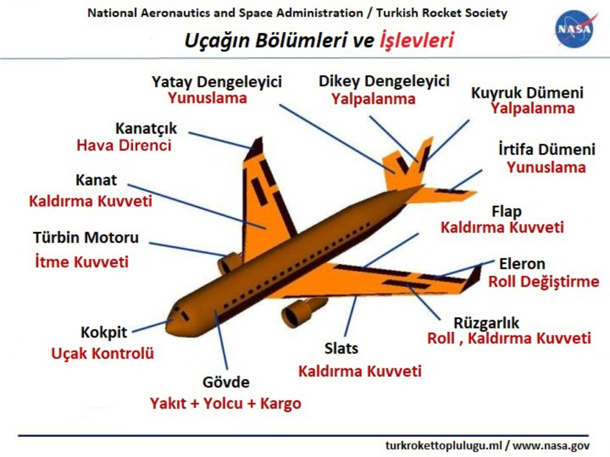

UÇAĞIN BÖLÜMLERİ VE İŞLEVLERİ

Uçaklar; insanları ve kargoları bir yerden başka bir yere taşımak için tasarlanmış nakliye cihazlarıdır.
Uçaklar; uçağın görevine bağlı olarak pek çok farklı şekil ve boyutta olabilirler. Resimdeki uçak, türbinle çalışan temsili bir uçaktır. Bir uçağın uçması için, uçağın ağırlığının, yakıtının, yolcuların ve yükün havalanması gerekir.

Kanatlar uçağı havada tutmak için gereken kaldırma kuvvetinin (lift) çoğunu oluşturur ama sadece kanatlar ile kaldırma kuvveti oluşmaz. Kaldırma kuvvetinin oluşması için uçağın itilmesi de gereklidir. Hava, uçağın bu itki gücüne aerodinamik hava direnci (drag) şeklinde dayanır. Modern uçaklar havanın uyguladığı hava direncini azaltmak için kanat uçlarında kanatçıklar (winglets) kullanır. Kanatların altına yerleştirilen türbin motorları uçağın hava direncinin üstesinden gelmesini ve havada ileri doğru gitmesini sağlayan itme kuvvetini (thrust) oluşturur.
Küçük veya düşük hızlı uçaklar türbin motorları yerine itme kuvvetini oluşturmak için pervaneler kullanır.
Uçağı kontrol etmek ve manevra yapmak için uçağın kuyruğunda daha küçük kanatlar kullanılır. Kuyruk genellikle yatay dengeleyici denilen sabit bir dikey parçaya; dikey dengeleyici denilen sabit bir dikey parçaya sahiptir. Dengeleyicilerin görevi, uçağın düz uçmasını sağlamak ve uçağa istikrar sağlamaktır. Dikey dengeleyici (vertical stabilizer), uçağın burnunun yalpalanmasını (yaw), bir yandan diğer yana sallanmasını daha genel bir deyişle rotadan çıkmasını önler. Yatay dengeleyici (horizontal stabilizer), burnun yunuslama (pitch) denilen yukarı-aşağı hareketini önler.
Kanatların ve dengeleyicilerin arka kısımlarında sabit bölümlere menteşelerle tutturulmuş hareketli bölümler bulunur. Resimde, bu hareketli bölümler kahverengi renklidir. Bir kanadın arkda kısmının değiştirilmesi kanadın ürettiği kuvvet miktarını değiştirecektir. Kuvvet miktarını değiştirebilme yeteneği bize uçağı kontrol etme ve manevra yapma imkanı veriyor. Dikey dengeleyicinin menteşeli kısmına diğer bir deyişle hareketli kısmına kuyruk dümeni (rudder) denir. Kuyruk dümeni gövdeye önünden bakıldığında kuyruğu sağa ve sola saptırmak için kullanılır. Yatay dengeleyicinin menteşeli kısmına irtifa dümeni (elevator) diğer bir deyişle yükseliş dümeni denir. Yükseliş dümeni kuyruğu yukarı ve aşağı saptırmak için kullanılır. Uçak kanadının dıştan, menteşeli parçasına eleron (aileron) denir. Kanatçıklar, uçağın kanatlarını bir yandan diğer yana döndürmek (roll) için kullanılır. Çoğu uçak da bir yandan diğer bir yana dönmek için rüzgarlık (spoiler) kullanır. Rüzgarlıklar, açıldıklarında kanat üzerinde akışı kesmek veya kaldırma kuvvetini azaltarak kuvvet miktarını değiştirmek için kullanılan küçük hareketli parçalardır.
Kanatlarda flap diye adlandırılan, gövdenin yanında, kanatların arkasında ek menteşeli bölümler vardır. Flaplar, kanat tarafından üretilen kuvvet miktarını artırmak için kalkış ve iniş sırasında aşağı doğru konuşlandırılır. Bazı uçaklarda, kanadın ön kısmı da yön değiştirir. Bu hareketli çıtaları (slats) kalkış ve iniş sırasında ek güç üretmek için kullanılır. Rüzgarlıklar ayrıca iniş sırasında uçağı yavaşlatmak ve uçak yerdeyken flapları engellemek için kullanılır. Birdahaki uçakla uçusunuzda kalkış ve iniş sırasında kanat şeklinin nasıl değiştiğine dikkat edin. Uçağın gövdesi (fuselage) tüm parçaları bir arada tutar. Pilotlar gövdenin önündeki kokpitte otururlar. Yolcular ve kargolar gövdenin arkasında taşınır. Bazı uçaklar yakıtını gövdede taşırken bazıları yakıtını kanatlarında taşır.
Kaynakça: